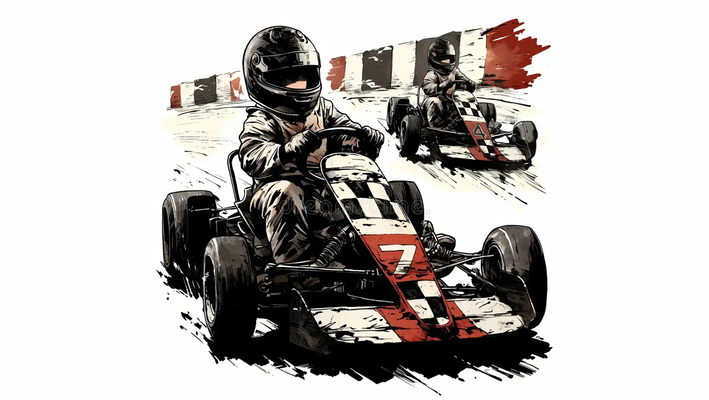

Play at What
Cost?
✳
High-thrill recreational safety system & behavioural nudge architecture.

Safety Compliance
Instinctive Nudges
behance.net/play-at-what-cost ↗
+3
Behavioral Safety Intervention — Field research, journey mapping & physical-digital nudge system.